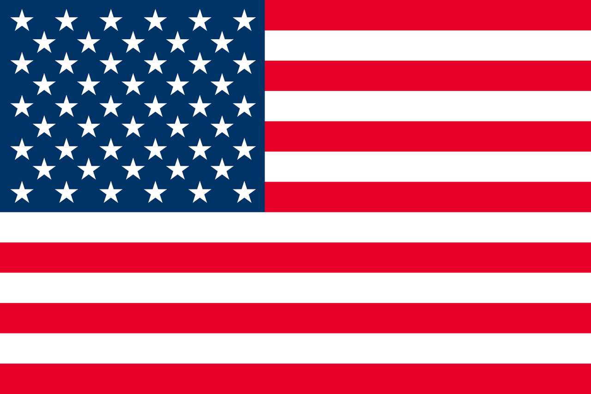

世界の取り組み

フランス
フランスでは、法律で食品を廃棄することを禁止している。スーパーなどで売れ残った食品は必ずフードバンクなどの団体に寄付したり、飼料として活用します。

アメリカ
アメリカではドギーバッグという制度がある。この制度はレストランなどで食べきれなかった食品をプラスチック容器に入れて持ち帰れるという制度である。日本でこの制度は、持ち帰った食品の衛生面的問題から浸透しなかった。

デンマーク
デンマークのコペンハーゲンでは、We Foodという賞味期限切れの商品や規格外の野菜などのみを販売するお店が存在する。この政策によって国全体の食糧廃棄の量が25％削減されました。